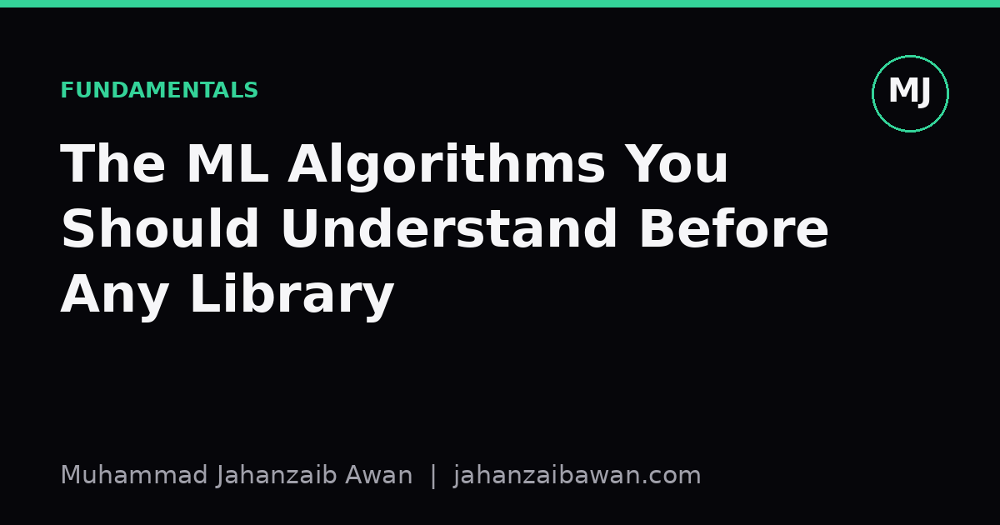

The ML Algorithms You Should Understand Before Any Library
Calling model.fit() is easy. Knowing what it is doing underneath is what separates a practitioner from someone who got lucky once.

Why the library is not the lesson
It has never been easier to type from sklearn import something and get a number back. That number might even be a good one. The trouble is that a working call tells you nothing about why it worked, and the first time your data shifts slightly, or a colleague asks why you chose that model, the library will not answer for you. I think the gap between people who can run machine learning and people who understand it comes down to a handful of ideas that predate every modern framework by decades.
None of these ideas require advanced mathematics to grasp at an intuitive level. What they require is sitting with a small, honest example until the mechanics click. I would rather spend an afternoon fitting a line by hand on fifteen points than spend a week tuning hyperparameters on a model I do not understand. The former teaches transferable intuition; the latter teaches you the quirks of one API.
Linear regression: the model that teaches you loss
Linear regression looks almost too simple to matter, which is exactly why it is the right place to start. Suppose you are predicting house price from floor area using ten houses. You draw a line through the scatter of points. The vertical distance between each point and the line is the error for that house. Square each error and add them up, and you have the sum of squared errors, the quantity linear regression is built to minimise.
Say your line predicts £210,000 for a house that actually sold for £230,000. That is a £20,000 error, and squaring it gives 400,000,000, a number dominated far more by large misses than small ones. This is the whole point: squared loss punishes big mistakes disproportionately, which is why a single wildly mispriced house can drag your whole line towards it. Understand that one property and you understand why linear regression is sensitive to outliers long before you read the word in a textbook.
Once you have fitted that line by trial and error, or with the closed-form normal equation, you have also learned what a loss function is, what a parameter is, and what it means to optimise. Every neural network, every gradient boosted tree, every logistic classifier is doing some version of this same thing: defining a number that measures wrongness and then searching for parameters that make it smaller. Linear regression is the clearest possible window into that idea because there is nowhere for the mechanism to hide.

Gradient descent: how models actually learn
Most people encounter gradient descent as an abstract diagram of a ball rolling downhill into a bowl. The intuition is correct, but it only becomes useful once you have watched it happen with real numbers. Imagine you are trying to find the minimum of a simple loss curve by hand. You start with a guess for your parameter, say a slope of 0.5. You compute the gradient, the direction of steepest increase, and step a small amount in the opposite direction. If the gradient is 4 and your learning rate is 0.01, you move the parameter by 0.04.
Do this badly and you will learn more than doing it well. Set the learning rate to 2 instead of 0.01 and the steps overshoot the minimum, bouncing back and forth and sometimes diverging to infinity. Set it to 0.0001 and the model crawls so slowly that after a thousand steps it has barely moved. This single failure mode, choosing a step size that is too large or too small, explains a huge fraction of the training problems people later encounter in deep learning and blame on the architecture rather than the optimiser settings.
Once you have manually stepped through a few iterations of gradient descent on a toy function, terms like learning rate schedules, momentum, and convergence stop being magic words in a framework's documentation and become specific, mechanical fixes to specific, mechanical problems. You will recognise a loss curve that is oscillating and know immediately to lower the learning rate, rather than reaching for a different model architecture entirely.
Decision trees and the bias-variance trade-off
Decision trees matter for a different reason: they are the clearest demonstration of overfitting you will ever see. Give a tree ten training examples and let it grow without restriction, and it will create a leaf for nearly every example, achieving close to perfect accuracy on data it has already seen. Ask it to predict an eleventh example it has never encountered and its accuracy can collapse, because it has memorised noise rather than learned a pattern.
Now limit the tree to a maximum depth of two or three splits. Training accuracy drops, perhaps from 100 percent to 85 percent, but accuracy on new, unseen examples often rises, because the tree is now capturing genuine structure rather than coincidence. This is the bias-variance trade-off made visible: a deep tree has low bias and high variance, a shallow tree has higher bias but lower variance, and somewhere between the two extremes lies the depth that generalises best for your particular data.
This is also where the discipline of proper evaluation becomes unavoidable. If you only ever check training accuracy, an unrestricted tree looks like the best model every time, which is precisely wrong. You need a held-out test set, or better, cross-validation, to see the collapse in performance that overfitting causes. Anyone who has watched this happen with a tree, where the fix is as simple as a depth parameter, will instinctively distrust a complex model that reports suspiciously perfect training results, no matter what library produced it.
The practical takeaway is simple. Before reaching for a library's most advanced model, fit a line by hand, step through gradient descent on paper, and grow an unrestricted tree just to watch it overfit. These exercises cost an afternoon and they give you the vocabulary and the instincts to debug every model you will ever train, long after the specific library syntax has been forgotten or replaced.